정보통신기사(구) (2011-03-20 기출문제)
1과목: 디지털 전자회로
1. 중심주파수가 455[kHz]이고 대역폭이 8[kHz]가 되는 단동조 회로가 있다. 이 회로의 Q는 약 얼마인가?
- 14
- 26
- 29
- 57
(정답률: 82%)

2. 다음 중 그림에서 다이오드(D1)는 무엇에 대한 변화를 보상하기 위한 것인가?
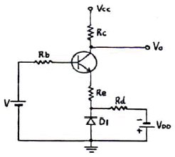
- Rb
- VBE
- VCC
- VCE
(정답률: 64%)
3. 다음 카르노(Karnaugh)도의 논리식은?
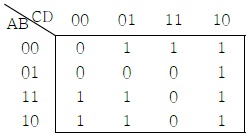
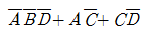
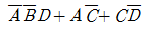
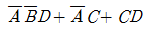
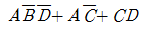
(정답률: 82%)
4. 다이오드를 사용한 정류회로에서 여러 다이오드(n개)를 직렬로 연결하여 사용하면 어떤 장점이 있는가?
- n배의 출력전압을 얻을 수 있다.
- 과전압으로부터 보호할 수 있다.
- 부하 출력의 맥동률을 감소시킬 수 있다.
- AC 전원으로 많은 전력을 공급받을 수 있다.
(정답률: 82%)
5. 다음 중 FM파의 복조 회로로 적합하지 않은 것은?
- 경사형 검파기
- 포락선 검파기
- PLL 검파기
- 직교 검파기
(정답률: 63%)
6. 35Bit의 두 2진수를 병렬가산하기 위해서는 최소한 몇 개의 반가산기와 전가산기가 필요한가?(문제 오류로 보기 내용이 정확하지 않습니다. 정확한 내용을 아시는분께서는 오류 신고를 통하여 내용 작성 부탁 드립니다. 정답은 1번입니다.)
- 반가산기: 1개, 전가산기: 34개
- 반가산기: 2개, 전가산기: 33개
- 반가산기: 1개, 전가산기: 34개
- 반가산기: 2개, 전가산기: 33개
(정답률: 82%)
7. 다음 중 CR 발진기의 설명으로 적합한 것은?
- 부성저항을 이용한 발진기이다.
- 압전기 효과를 이용한 발진기이다.
- R, L 및 C의 부궤환에 의해 발진한다.
- C와 R의 정궤환에 의해 발진한다.
(정답률: 75%)
8. 수정발진기의 주파수 안정도에 대한 설명으로 틀린 것은?
- 수정편은 온도의 변화에 민감하다.
- 수정편의 Q가 매우 높다.
- 수정진동자는 기계적 및 물성적으로 안정하다.
- 발진 조건을 만족하는 유도성 주파수 범위가 매우 좁다.
(정답률: 59%)
9. 다음과 같은 다이오드 회로의 전달특성으로 적합한 것은? (단, Vz는 ZD1과 ZD2의 항복 전압이다.)
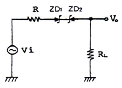
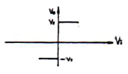
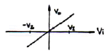
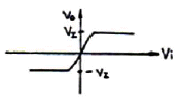
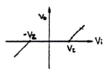
(정답률: 69%)
10. 다음 논리식 중 등식이 성립되지 않는 것은?
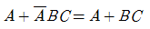
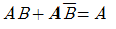
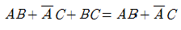
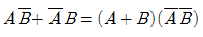
(정답률: 70%)
11. 다음 회로의 용도로 적합한 것은?
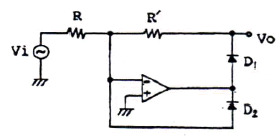
- 반파 정류기
- 전파 정류기
- Log 증폭기
- Anti-log 증폭기
(정답률: 66%)
12. 30:1의 리플 카운터(ripple counter) 설계시 최소로 필요한 플립플롭의 수는?
- 3
- 4
- 5
- 9
(정답률: 84%)
13. 반파정류회로에서 다이오드 순방향저항 Rf=2[Ω], RL=1[kΩ], Vi는 실효치 100[V]이다. 다이오드의 최대 역전압은 약 얼마인가?
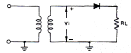
- 100[V]
- 141[V
- 200[V]
- 252[V]
(정답률: 65%)
14. 다음 중 그림과 같은 구형파를 미분회로에 통과시킬 경우 출력 파형에 가장 가까운 것은?
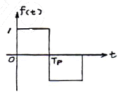
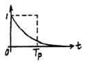
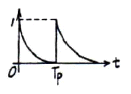
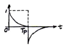
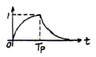
(정답률: 76%)
15. 다음 중 불연속 레벨 변조에 해당되는 것은?
- PCM
- AM
- PM
- FM
(정답률: 72%)
16. 현재의 출력(Q) 상태가 1일 때, JK 플립플롭의 설명으로 틀린 것은?
- J=1이고, K=0이면 1을 출력한다.
- J=1이고, K=1이면 0을 출력한다.
- J=0이고, K=1이면 1을 출력한다.
- J=0이고, K=0이면 1을 출력한다.
(정답률: 66%)
17. 비안정 멀티바이브레이터의 베이스 저항값이 R[Ω], 용량이 C[F]일 때 구형파의 주파수[Hz]는 약 얼마인가? (단, R: 700[Ω], C: 1[μF]이다.)
- 1.4×102
- 1×103
- 7×103
- 14×103
(정답률: 52%)
18. 다음 연산 증폭회로에서 전압이득(VO/VS)은?
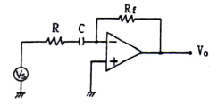
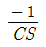
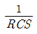
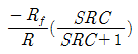
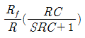
(정답률: 79%)
19. 그림의 복수 이미터 트랜지스터가 이루는 논리게이트는?
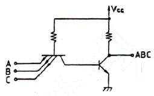
- TTL
- DTL
- DCTL
- RTL
(정답률: 77%)
20. 다음 중 저임피던스 부하에서 고전류이득을 얻으려 할 때 사용되는 증폭 방식으로 가장 적합한 것은?
- 베이스 접지
- 컬렉터 접지
- 이미터 접지
- A급 증폭
(정답률: 58%)
2과목: 정보통신 시스템
21. CRC(Cyclic Redundancy Check) 방식에 대한 설명으로 틀린 것은?
- 문자단위의 전송에서 응용하기 적합하다.
- 패리티 검사코드의 일종인 순환코드를 이용한다.
- 집단성 에러도 검출이 가능하다.
- CRC-12, CRC-16 등의 생성다항식을 이용한다.
(정답률: 60%)
22. 데이터통신 시스템의 구축에서 제일 나중에 수행되는 것은?
- 기초조사 및 계획
- 회선구성
- 세부설계
- 종합운용시험
(정답률: 82%)
23. ITU-T에서 권고하는 공중데이터망에서 비동기식 전송을 위한 DTE와 DCE 사이의 접속 규격은?
- X.20
- X.21
- X.26
- X.28
(정답률: 52%)
24. MODEM의 수신 입력단에서 최조 S/N 비가 25[dB] 필요하도록 -10[dB]라고 할 때, 이 전송로의 허용되는 잡음레벨[dB]은?
- -45
- -35
- -25
- -15
(정답률: 76%)
25. 10개 국(Station)을 서로 망형 통신망으로 구성시 요구되는 최소의 통신회선 수는?
- 15
- 25
- 35
- 45
(정답률: 84%)
26. 개방형 시스템의 7계층에서 인접장치 간에 원활한 데이터의 전송이 이루어질 수 있도록 정보의 프레임화, 에러검출 및 제어를 주로 하는 계층은?
- 물리 계층
- 데이터링크 계층
- 네트워크 계층
- 세션 계층
(정답률: 73%)
27. 회선교환방식과 비교한 패킷교환방식에 대한 설명으로 틀린 것은?
- 패킷단위로 통신경로를 선택하기 때문에 우회전송이 가능하며 회선효율이 높다.
- 전송제어절차, 정보의 형식 등에 제약을 받지 않아 비교적 길이가 길고 통신밀도가 높은 경우에 유리하다.
- 전송속도가 다른 이기종 단말기 상호간의 통신이 가능하다.
- 전송 에러가 있을 경우 재전송을 통해 고품질의 정보전송이 가능하다.
(정답률: 62%)
28. LAN의 매체 접근 제어(medium access control) 프로토콜 가운데 패킷 충돌이 발생하지 않는 것은?
- Aloha
- Slotted Aloha
- CSMA/CD
- Token ring
(정답률: 75%)
29. 다음 중 DCE에 대한 설명으로 틀린 것은?
- 데이터회선종단장치를 뜻한다.
- 디지털 전송설비가 사용될 때 DSU가 적합하다.
- 공중전화망에 접속할 경우에는 MODEM이 적합하다.
- 전송데이터의 오류제어 및 변복조 기능을 갖는다.
(정답률: 52%)
30. IPv4와 IPv6의 설명으로 적합하지 않은 것은?
- 인터넷 프로토콜의 주소 표현방식이다.
- IPv6의 주소 부족으로 IPv4가 개발되었다.
- IPv4는 32비트로 구성되어 있다.
- IPv6는 128비트로 구성되어 있다.
(정답률: 82%)
31. 광송신기의 출력이 -3[dBm], 광수신기의 수신감도가 -36[dBm], 광섬유의 손실이 1[dB/km]이다. 만약 접속 손실과 광커넥터 손실을 무시한다면, 이러한 광전송 시스템이 무중계로 전송 가능한 최대 거리[km]는?
- 33
- 66
- 99
- 132
(정답률: 72%)
32. 다음 중 BcN에 대한 설명으로 적합한 것은?
- 광대역통신망(Broadband Communication Network)이다.
- 방송통신융합망(Broadcasting and Communication Network)이다.
- 광대역통합망(Broadband Convergence network)이다.
- 기업간통신망(Business Company Network)이다.
(정답률: 66%)
33. TCP/IP 상에서 운용되는 응용 서비스가 아닌 것은?
- SNA
- Telnet
- FTP
(정답률: 65%)
34. 공중데이터망에서 PAD를 액세스하는 비동기식 단말장치를 DTE/DCE 간의 접속규격은?
- X.3
- X.28
- X.29
- X.75
(정답률: 56%)
35. 이동통신 기지국의 서비스 범위를 확대하는 방법과 거리가 먼 것은?
- 기지국의 안테나 높이를 크게 한다.
- 무지향성 안테나를 사용한다.
- 중계기를 사용한다.
- 저잡음 수신기를 사용한다.
(정답률: 75%)
36. IEEE 802.11의 무선 중파수 영역에서 “직접 순서 확산 스펙트럼”과 관련된 것은?
- IEEE 802.11 FHSS
- IEEE 802.11 DSSS
- IEEE 802.11a OFDM
- IEEE 802.11g OFDM
(정답률: 69%)
37. ATM 프로토콜은 물리계층, ATM계층, AAL의 3계층으로 구성되어 있다. 다음 중 물리계층의 기능이 옳은 것은?
- 셀 헤더의 분석 및 처리
- 셀 단위의 분해 및 조립
- 서비스별 수렴기능 구현
- 셀 경계 식별
(정답률: 64%)
38. 다음 중 다주파 부호방식에 대한 설명으로 틀린 것은?
- 선택신호의 송출시간을 단축시키는 이점이 있다.
- 다른 방해로부터 강하여 영향을 덜 받는다.
- 임펄스 방식보다 오접속이 적다.
- 사용주파수는 음성대역외의 주파수를 사용한다.
(정답률: 57%)
39. ITU-T에서 권고한 TMN 관리계층 중 성능관리, 고장관리, 구성관리, 과금관리 및 안전관리의 기능으로 구성된 계층은?
- 사업관리 계층(BML)
- 서비스관리 계층(SML)
- 망관리 계층(NML)
- 요소관리 계층(EML)
(정답률: 62%)
40. 광전송 시스템을 구성할 때 고려할 사항이 아닌 것은?
- 전송매체
- 전자파의 간섭
- 전송방식
- 다중화방식
(정답률: 56%)
3과목: 정보통신 기기
41. 스켈치(Squelch) 회로에 대한 설명으로 적합한 것은?
- FM 송신기에 입력신호가 없으면 자동으로 변조회로의 동작을 정지시킨다.
- FM 수신기에서 입력신호가 없을 때 자동으로 저주파 증폭기의 기능을 정지시킨다.
- SSB 송신기에 출력신호가 없으면 자동으로 변조회로의 동작을 정지시킨다.
- FM 수신기의 주파수 변별기의 일종이다.
(정답률: 53%)
42. 네트워크를 서로 연결하여 상호접속을 위한 망간연동장치로 사용되지 않는 것은?
- 리피터
- 브리지
- 라우터
- 트랜시버
(정답률: 66%)
43. 정보통신 시스템에서 CCU(Communication Control Unit)의 역할이 아닌 것은?
- 통신회선과 중앙처리장치를 결합시킴
- 중앙처리장치와 데이터의 송ㆍ수신제어
- 데이터 회선 종단장치의 기능
- 다수의 회선을 시분할 방식으로 다중제어
(정답률: 54%)
44. 다음 중 NTSC 컬러 TV의 음성신호를 변조하는 방식은?
- AM
- PCM
- VSB
- FM
(정답률: 61%)
45. 다음 중 팩시밀리의 처리과정이 순서대로 적합한 것은?
- 화상정보 → 광전변환 → 정보복원 → 화상정보
- 화상정보 → 복조 → 변조 → 화상정보
- 화상정보 → 신호처리 → 화상정보 → 변조
- 변조 → 화상정보 → 신호처리 → 화상정보
(정답률: 71%)
46. 광전송 시스템에서 전송신호와 간섭을 유발시키는 역반사 잡음을 방지하기 위한 것은?
- 광감쇠기
- 광서큘레이터
- 광커플러
- 광아이솔레이터
(정답률: 79%)
47. 국내 지상파 아날로그 컬러 TV 방식과 채널당 주파수 대역이 옳은 것은?
- NTSC, 8[MHz]
- NTSC, 6[MHz]
- PAL, 6[MHz]
- SECAM, 6[MHz]
(정답률: 76%)
48. 다음 중 수신기의 성능지수와 관계없는 것은?
- 변조특성
- 안정도
- 충실도
- 선택도
(정답률: 58%)
49. EIA의 RS-232C 25핀 접속규격 중 핀 번호의 정의가 틀린 것은?
- 핀 2번 : 데이터 송신(TXD)
- 핀 4번 : 송신요구(RTS)
- 핀 6번 : 데이터 세트 준비완료(DSR)
- 핀 8번 : 데이터 단말준비 완료(DTR)
(정답률: 67%)
50. 주파수 분할 다중화에서 부채널 간의 상호 간섭을 방지하기 위한 완충지역은?
- Guard band
- Guard time
- Channel
- Sub group
(정답률: 81%)
51. 다음 중 전화 교환기의 제어방식에 따른 분류가 아닌 것은?
- 단독제어방식
- 공통제어방식
- 축적프로그램제어방식
- 분산제어방식
(정답률: 61%)
52. 비디오텍스에서 직선, 원호 및 다각형 등의 기하학적 형상을 가진 도형 요소를 사용하여 부호화 하는 방식은?
- 알파 포토그래픽 방식
- 알파 지오메트릭 방식
- 알파 모자이크 방식
- 알파 캐릭터 방식
(정답률: 80%)
53. 다음 중 그림이나 사진을 직접 컴퓨터에 입력하는 것은?
- 스캐너
- 마우스
- 디지타이저
- 플로터
(정답률: 82%)
54. 다음 중 트렁크 라인(T1 또는 E1)을 그대로 수용할 수 있는 DCE는?
- MODEM
- FEP
- CSU
- CCU
(정답률: 70%)
55. DSB 전송방식과 비교하여 SSB 전송방식의 특징이 아닌 것은?
- 점유주파수 대역폭이 1/2이다.
- 적은 송신전력으로 통신이 가능하다.
- 신호대잡음비(S/N)가 향상된다.
- 송수신 회로구성이 간단하다.
(정답률: 74%)
56. 다음 중 G4 팩시밀리의 특징과 거리가 먼 것은?
- 고해상도에 의한 문서통신이 가능하다.
- 부호화는 Modified Huffman 방식을 사용한다.
- PSDN, ISDN 등에서 사용 가능하다.
- 오류제어 기능이 있다.
(정답률: 71%)
57. 마이크로파 중계방식 중 중계소마다 신호의 복조, 재생 및 변조를 통하여 중계하는 방식은?
- 헤테로다인 중계 방식
- 검파 중계 방식
- 무급전 중계 방식
- 직접 중계 방식
(정답률: 56%)
58. 다음 중 PCM 신호 수신시 사용되는 필터로 적합한 것은?
- LPF
- HPF
- BPF
- BEF
(정답률: 74%)
59. AM 수신기으 수신 전파의 강약에 있어서 자동으로 일정한 음량으로 수신할 목적으로 이용되는 것은?
- 검파기
- 중간주파 증폭기
- 자동 잡음제한기
- 자동이득 제어기
(정답률: 70%)
60. 다음 중 X.400 시리즈에 기초한 전자우편 시스템은?
- EDI
- MHS
- LAN
- ISDN
(정답률: 83%)
4과목: 정보전송 공학
61. 다음 중 HDLC 제어필드의 형식이 아닌 것은?
- I 형식
- S 형식
- U 형식
- P 형식
(정답률: 74%)
62. 전송선로의 무왜조건이 되기 위한 1차 정수 R,C,L,G의 관계식은?
- RL = 2CG
- RC = LG
- RG = LC
- RG = 2L
(정답률: 64%)
63. 디지털 신호의 펄스열을 그대로 또는 다른 형식의 디지털 펄스 파형으로 변환시켜 전송하는 방식은?
- 베이스밴드 전송방식
- 반송대역 전송방식
- 광대역 전송방식
- 대역변조 전송방식
(정답률: 68%)
64. 2개의 지점에서 신호의 세기를 측정한 결과, 각각 P1과 P2였다. 여기서 P1/P2=0[dB]가 의미하는 것은?
- P1 전력레벨이 0[dB]이다.
- P2 전력레벨이 0[dB]이다.
- P1이 P2보다 전력이 크다.
- P1과 P2의 전력 크기가 같다.
(정답률: 76%)
65. 채널의 대역폭이 12[kHz]이고 S/N비가 15일 때, 채널용량[kbps]은?
- 12
- 48
- 56
- 68
(정답률: 58%)
66. 다음 중 대역확산 처리의 장점이 아닌 것은?
- 잡음의 영향 최소
- 선택적 어드레싱
- 메시지의 비밀유지
- 시스템의 간단성
(정답률: 53%)
67. 다음 중 페란티(Ferranti) 현상에 대한 설명으로 적합한 것은?
- 전화선의 누화현상을 말한다.
- 장하 케이블에서 발생하는 현상이다.
- 전송로의 특성 임피던스가 클 때, 발생하는 현상이다.
- 수단이 개방된 선로에서 수단전압이 송단전압보다 커지는 현상을 말한다.
(정답률: 62%)
68. 다음 중 광섬유의 광손실에 해당하지 않는 것은?
- 산란 손실
- 구조 불완전에 의한 손실
- 복사 손실
- 마이크로밴딩 손실
(정답률: 45%)
69. 다음 중 전진에러제어(FEC)에 대한 설명으로 옳은 것은?
- 역방향 채널이 필요하다.
- 에러의 검출은 가능하나 스스로 수정이 불가능하다.
- 에러검출로 패리티체크 방식을 사용한다.
- 연속적으로 데이터의 전송이 가능하다
(정답률: 43%)
70. 다음 중 광섬유의 특징에 관한 설명으로 적합하지 않은 것은?
- 접속이 용이하다.
- 장거리 전송이 가능하다.
- 광전 변환이 필요하다.
- 외부적 전기 신호의 영향을 받지 않는다.
(정답률: 50%)
71. 다음 중 패킷교환망에서 사용되는 트래픽 제어 기술이 아닌 것은?
- 흐름제어
- 폭주제어
- 교착회피
- 에러제어
(정답률: 40%)
72. 다음 중 에러 발생율을 감지하여 가장 적절한 프레임의 길이를 동적으로 변경하여 전송하는 방식은?
- go-back-N ARQ
- stop-and-wait ARQ
- adaptive-ARQ
- selective-repeat ARQ
(정답률: 66%)
73. 다음 변조방식 중 예측기를 사용하지 않는 것은?
- PCM
- DM
- DPCM
- ADPCM
(정답률: 52%)
74. 에러제어 방식 중에서 복수의 에러를 정정할 수 있는 것은?
- BCH 부호
- ARQ 방식
- BCD 부호
- PARITY 부호
(정답률: 49%)
75. 양자화 과정에서 압축과 신장을 행하는 목적으로 적합하지 않은 것은?
- 선형 양자화를 하면서도 비선형 양자화의 효과를 얻기 위해서
- 양자화 계단의 크기가 시간에 따라 변화되도록 하기 위해서
- 양자화시 사용하는 비트수를 증가시키지 않으면서도 신호대 양자화 잡음비를 향상시키기 위해서
- 작은 PAM 신호 및 큰 PAM 신호 모두에 대해 일정한 신호대 양자화 잡음비를 얻기 위해서
(정답률: 62%)
76. 이동통신망에서 발생하는 페이딩 중 고층 건물, 철탑 등 인공구조물에 의하여 발생하는 페이딩은?
- Long term fading(Log normal fading)
- Short term fading(Rayleigh fading)
- Rician fading
- Mid term fading
(정답률: 71%)
77. 전송효율을 높이기 위해 위상을 여러 개 사용하는 다치변조 방식이 아닌 것은?
- QPSK
- OQPSK
- QAM
- PSK
(정답률: 57%)
78. 다음 중 광통신 시스템에서 전송속도를 제한하는 가장 주된 요인은?
- 광 분산
- 광 손실
- 전반사
- 굴절
(정답률: 64%)
79. 다음 중 정합필터의 구성 소자로 적합한 것은?
- 하나의 곱셈기와 하나의 미분기
- 하나의 곱셈기와 하나의 적분기
- 하나의 가산기와 하나의 미분기
- 하나의 가산기와 하나의 적분기
(정답률: 71%)
80. 다음 중 IEEE 802.3 프로토콜에 해당하는 것은?
- CSMA/CD
- Token bus
- Token ring
- Frame relay
(정답률: 73%)
5과목: 전자계산기일반 및 정보통신설비기준
81. 평형회선에서 두 회선 사이의 근단누화 또는 원단누화 감쇠량은 몇 데시벨[dB] 이상이어야 하는가?
- 48
- 55
- 68
- 78
(정답률: 69%)
82. 다음 중 정보통신공사업법 관련 ( ) 안에 들어갈 내용으로 옳은 것은?
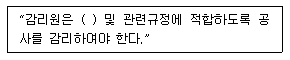
- 도면
- 설계도서
- 기술기준
- 사내규격
(정답률: 74%)
83. 다음 중 별정통신사업에 해당하는 것은?
- 전기통신회선설비를 설치하고 이를 이용하여 특별통신 역무를 제공하는 사업
- 기간통신사업자로부터 전기통신회러설비를 임차하여 기간통신역무외의 전기통신역무를 제공하는 사업
- 기간통신사업자의 전기통신회선설비 등을 이용하여 기간통신역무를 제공하는 사업
- 특별히 정한 전기통신설비를 설치하고 이를 이용하여 기간통신역무외의 특정 전기통신역무를 제공하는 사업
(정답률: 52%)
84. 다음 중 분계점을 설정하는 이유로 적합한 것은?
- 예비용 전원설비 등의 설치 및 공급을 위하여
- 유지ㆍ보수시 간단하게 분리, 시험할 수 있게 하기 위하여
- 설비의 전기적, 음향적 결합의 제반 문제점 해소를 위하여
- 건설과 보전에 관한 책임 등의 한계를 명확하게 하기 위하여
(정답률: 73%)
85. 다음 중 정보통신공사업자가 아닌 자가 시공할 수 있는 경미한 공사는?
- 건축물에 설치되는 5회선 이하의 구내통신선로 설비공사
- 전기통신 시설물의 전력유도방지 설비공사
- 종합유선방송 시설의 설비공사
- 전기통신용 지하관로의 설비공사
(정답률: 70%)
86. 방송통신위원회가 수립하는 전기통신기본계획에 포함되지 않아도 되는 것은?
- 전기통신사업에 관한 사항
- 전기통신기술의 진흥에 관한 사항
- 정보화 사회 인력양성에 관한 사항
- 전기통신의 질서유지에 관한 사항
(정답률: 63%)
87. 다음 중 저압에 대한 용어의 정의로 적합한 것은?
- 직류 750볼트 이하, 교류는 600볼트 이하
- 직류 600볼트 이하, 교류는 750볼트 이하
- 직류 700볼트 이하, 교류는 650볼트 이하
- 직류 700볼트 이하, 교류는 600볼트 이하
(정답률: 69%)
88. 다음 중 전력유도 방지를 위한 기기 오동작 유도종전압의 제한치는?
- 10볼트
- 15볼트
- 20볼트
- 30볼트
(정답률: 52%)
89. 다음 중 전기통신사업에 제공하기 위한 전기통신설비를 말하는 것은?
- 정보통신설비
- 전기통신회선설비
- 사업용전기통신설비
- 자가전기통신설비
(정답률: 64%)
90. 기간통신사업자가 전기통신설비의 설치ㆍ보전을 위한 측량ㆍ조사 등을 위하여 타인의 주거용 건물에 출입하고자 할 때, 적합한 절차는?
- 임의로 출입한다.
- 거주자에게 미리 통보하고 출입한다.
- 거주자의 승낙을 얻은 후 출입한다.
- 신분을 증명하는 증표를 제시하고 출입한다.
(정답률: 73%)
91. 하나의 명령 사이클을 실행하는데 2개의 머신 사이클이 필요하다고 했을 때 CPU 클록 주파수를 10[MHz]로 동작시켰다. 이 때 1개의 명령 사이클을 실행하는데 걸리는 시간은? (단, 각각의 머신 사이클은 5개의 머신 스테이트로 구성되어 있다.)
- 1[μs]
- 2[μs]
- 10[μs]
- 20[μs]
(정답률: 50%)
92. 다음 중 Floating Point 표현 수들 사이의 곱셈 알고리즘 과정에 해당되지 않는 것은?
- 가수를 곱한다.
- 결과를 정규화시킨다.
- 가수의 위치를 조정한다.
- 0(zero) 인지의 여부를 조사한다.
(정답률: 73%)
93. 짝수 패리티를 이용한 8421 BCD 코드를 해밍코드로 변환하면 다음 표와 같다. 빈칸에 들어갈 것은?
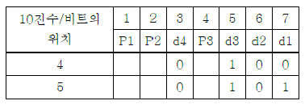
- 4: 000, 5: 111
- 4: 110, 5: 001
- 4: 101, 5: 010
- 4: 100, 5: 101
(정답률: 72%)
94. 중앙처리장치의 메이저 스테이션 중 기억장치로부터 주소를 읽은 후 그것이 직접주소인지 간접주소인지를 시험하고 그에 따른 적절한 동작을 하는 스테이션은?(오류 신고가 접수된 문제입니다. 반드시 정답과 해설을 확인하시기 바랍니다.)
- FETCH 스테이션
- EXECUTE 스테이션
- INDIRECT 스테이션
- INTERRUPT 스테이션
(정답률: 59%)
95. 인터럽트의 발생 요인이 아닌 것은?
- 오류(error)
- 서브루틴 호출
- 입출력 처리요구
- 정전
(정답률: 58%)
96. 기억장치 사상 I/O(memory-mapped I/O) 방식에 대한 설명으로 적합하지 않은 것은?
- I/O 제어기 내의 레지스터들을 기억장치 내의 기억장소들과 동일하게 취급한다.
- 레지스터들의 주소도 기억장치 주소영역의 일부분을 할당한다.
- 기억장치와 I/O 레지스터들을 액세스할 때 동일한 기계 명령어들을 사용할 수 있다.
- 이 방식을 사용하여도 기억장치 주소 공간은 줄어들지 않는다.
(정답률: 71%)
97. 컴퓨터 메모리에 저장된 바이트들의 순서를 설명하는 용어로 바이트 열에서 가장 큰 값이 먼저 저장되는 것은?
- large-endian
- small-endian
- big-endian
- little-endian
(정답률: 62%)
98. 선점 스케줄링에 대한 설명으로 옳은 것은?
- 한 프로세스가 실행되면 완료될 때까지 프로세서를 차지한다.
- 작업시간이 짧은 작업이 긴 작업을 기다리는 경우가 발생할 수도 있다.
- 프로세스의 종류시간에 대해 예측이 가능하다.
- 빠른 응답시간을 요구하는 시분할 시스템, 실시간 시스템에 적합하다.
(정답률: 61%)
99. 컴퓨터에 여러 개의 채널 제어기가 존재할 때, 이들을 구별하기 위한 것은?
- 채널 프로그램의 주소
- 입출력 장치 부호
- 채널 주소 부분
- 연산자 부분
(정답률: 62%)
100. 마이크로프로세서에 대한 설명 중 올바른 것은?
- CPU를 집적화시킨 것이다.
- intel 80386 DX는 4bit 마이크로프로세서이다.
- 대형, 중량, 고가격이다.
- 초창기의 마이크로프로세서는 한 번에 8bit를 처리 할 수 있었다.
(정답률: 67%)